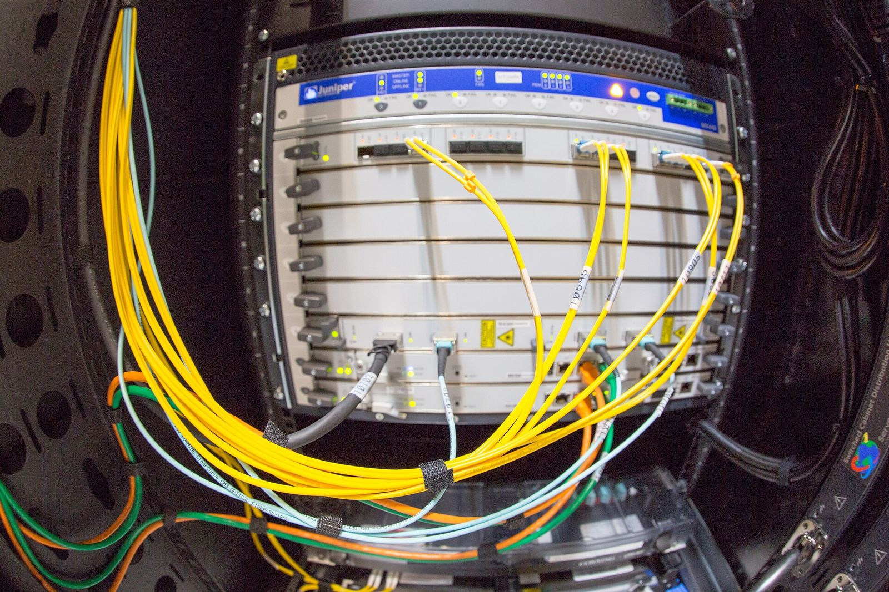

OpenAI 与思科推出开源运行时 Shirudo：称可帮助运维人员在不必等待补丁或重启的情况下保护正在运行的 Linux 系统；在一项受控测试中，由 Codex 生成的防护（shield）在无需重启的情况下，阻止了对正在运行的 Elasticsearch 服务的 Java4Shell 利用尝试；项目以 BSD 2-Clause 许可开源，其 BPF 程序同时采用 BSD 与 GPL 双重许可


OpenAI 于 2026 年 11 月 23 日在官网宣布，与思科（Cisco）共同推出 Shirudo，这是一个开源运行时，旨在帮助团队在推送补丁的同时保护 Linux 系统，而不必等待补丁完成或重启。公告写道，在一项受控测试中，由 Codex 生成的防护（shield）在无需重启的情况下，阻止了对正在运行的 Elasticsearch 服务的一次 Java4Shell 利用尝试。Shirudo 一词在文中注明为日语“盾”（shield）。
公告称，测试并部署补丁仍可能需要数天或数周；在此期间实施保护之所以困难，是因为一次利用和一次合法请求可能依赖同一种 Linux 操作，若彻底阻断该操作，服务可能中断。Shirudo 的设计是让安全团队先测试一项临时防护能否在放行合法请求的同时，阻断暴露漏洞的行为；运营人员批准后，可在服务继续运行的情况下部署该防护。
OpenAI 总裁兼联合创始人 Greg Brockman 在公告中说：“We're giving defenders better models and tools to find and fix vulnerabilities faster, but finding a bug today doesn't mean you can patch every system tomorrow. We are partnering closely with Cisco on Shirudo to help teams protect the systems they need to keep running while they build and roll out a fix. So many teams rely on the same software that it makes sense to build these tools in the open. Now when one team finds a better way to protect a system, others don't have to start from scratch.”（我们正在为防御者提供更好的模型与工具，以更快地发现并修复漏洞，但今天找到一个缺陷，并不意味着明天就能为每一套系统打上补丁。我们与思科密切合作推出 Shirudo，是为了帮助团队在编写并推出修复的同时，保护必须保持运行的系统。如此多的团队依赖同一类软件，因此这些工具适合在开放中建造。当一个团队找到更好的保护方式时，其他团队不必再从零开始。）
今天找到一个缺陷，并不意味着明天就能为每一套系统打上补丁。
公告介绍，Shirudo 使用 Linux 的 eBPF 技术，使小型程序能够在操作系统内的特定位置运行，从而观察可疑活动，并对正在运行的系统实施有针对性的安全保护。OpenAI 与思科围绕四项核心能力设计该项目：实时保护，即 eBPF 防护可在不必重启系统的情况下阻断易受攻击的代码路径，安全团队也可在强制执行前观察拟议防护对应用的影响；机器速度的防御，即让代理获得可编程控制，以调查漏洞、开发有针对性的防护，并对照利用与真实工作负载验证效果，部署内容仍由安全团队控制；可信部署，即防护在加载前经过加密签名与验证，Linux 的 eBPF 验证器按其安全规则检查 eBPF 程序，内核安全控制则限制未经授权的更改；以及由硬件支持的验证，即使用可信平台模块（TPM）为防护的加载或移除提供可核验记录，运营人员可用这些证据检查系统是否满足其安全要求。
关于上述 Java4Shell 示例，公告写道：团队使用 OpenAI 的 Codex 生成一项防护，为 Java 的 Base64 解码器增加输入检查，并直接附加到正在运行的 Elasticsearch 进程；在尝试利用该漏洞时，防护拒绝了恶意输入，从而在 Elasticsearch 继续运行的同时阻断了攻击。OpenAI 与思科将 Shirudo 开源，以便开发者、安全研究人员和基础设施运营人员检查代码、测试防护并参与开发。公告写明，Shirudo 以 BSD 2-Clause 许可开源，其 BPF 程序同时采用 BSD 与 GPL 双重许可。其目标包括在披露漏洞的同时提供经过测试的防护，使运营人员在准备永久性补丁期间，有办法评估并部署临时保护。代码、文档与动手实验的入口见该公告页面。
摘记，不是官方媒体。产品定位、受控测试示例、eBPF 与四项能力、开源许可，均转述 OpenAI 11 月 23 日官方公告。文中未独立复现该受控测试，也不构成对 Shirudo 防护效果的评估。